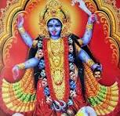

ମାଆ କାଳୀ ଓ ଦଶ ମହାବିଦ୍ୟା
Ayush Kumar Routray
ମୁଁ ଏହି ୱେବସାଇଟ୍ ଡିଜାଇନ୍ କରିଛି ଯାହାର ଉଦ୍ଦେଶ୍ୟ ମାଆ କାଳୀ ଓ ଦଶ ମହାବିଦ୍ୟା ବିଷୟରେ ଜଣାଇବା।
ମାଆ କାଳୀ

ମା କାଳୀ ହେଉଛନ୍ତି ହିନ୍ଦୁ ଧର୍ମର ଏକ ଅତ୍ୟନ୍ତ ଶକ୍ତିଶାଳୀ ଓ ଭୟଙ୍କର ଦେବୀ। ସେ ଶକ୍ତି ଦେବୀଙ୍କ ଏକ ରୂପ ଓ ଦଶମହାବିଦ୍ୟାମାନଙ୍କ ମଧ୍ୟରୁ ପ୍ରଧାନ। ମା କାଳୀ ସଂହାର, ଅନ୍ଧକାର, ମୃତ୍ୟୁ ଓ କାଳର ଦେବୀ ଭାବେ ପୂଜିତ ହୁଅନ୍ତି। ତାଙ୍କର ଭକ୍ତମାନେ ବିଶ୍ୱାସ କରନ୍ତି ଯେ ସେ ଦୁଷ୍ଟ ଶକ୍ତିଙ୍କୁ ନଶ୍ଟ କରି ନ୍ୟାୟ ଏବଂ ଧର୍ମକୁ ସ୍ଥାପନ କରନ୍ତି। ମା କାଳୀଙ୍କ ରୂପ ଅତି ରୁଦ୍ର ଓ ଭୟଜନକ। ସେ କଳାବର୍ଣ୍ଣ ଓ ନଗ୍ନ ରୂପରେ ବିଭୂଷିତ। ତାଙ୍କର ଚାରିଟି ବାହୁ ଥାଏ — ଗୋଟିଏରେ ଖଡ଼୍ଗ, ଦ୍ୱିତୀୟରେ କଟା ମୁଣ୍ଡ, ତୃତୀୟ ଓ ଚତୁର୍ଥ ବାହୁରେ ଅଶୀର୍ବାଦ ଓ ଭୟମୁକ୍ତି ଦାନ କରନ୍ତି। ସେ ମୃତ ଶତ୍ରୁ ଉପରେ ପଦ ରଖି ଦଣ୍ଡ ଦେଇଥିବା ଭାବରେ ଦେଖାଯାନ୍ତି, ତାଙ୍କର ଘଣ୍ଟି, କପାଳମାଳା ଓ ରକ୍ତ ବିଭୂଷା ତାଙ୍କ ରୂପକୁ ଅଧିକ ଭୟଭୀତ କରେ। ମା କାଳୀଙ୍କ ଉପାସନା ବିଶେଷ କରି ଦୀପାବଳି ଓ କାଳୀ ପୂଜାରେ ହୁଏ। ଭକ୍ତମାନେ ସେଠି ତାଙ୍କୁ ଶକ୍ତି, ସାହସ, ରକ୍ଷା ଓ ମୁକ୍ତି ପାଇଁ ପୂଜା କରନ୍ତି। ସେ ଅନ୍ୟାୟ, ଅଧର୍ମ ଓ ଅଶୁଭତାର ନାଶକ ଭାବେ ବିଶ୍ୱାସ କରାଯାନ୍ତି। ମା କାଳୀ ଅବିନାଶୀ ଓ ନିର୍ମଳ ଶକ୍ତିର ପ୍ରତୀକ। ସେ ଭୟଙ୍କୁ ଦୂର କରି, ଭକ୍ତଙ୍କୁ ମୋକ୍ଷ ଓ ଶାନ୍ତି ପ୍ରଦାନ କରନ୍ତି।